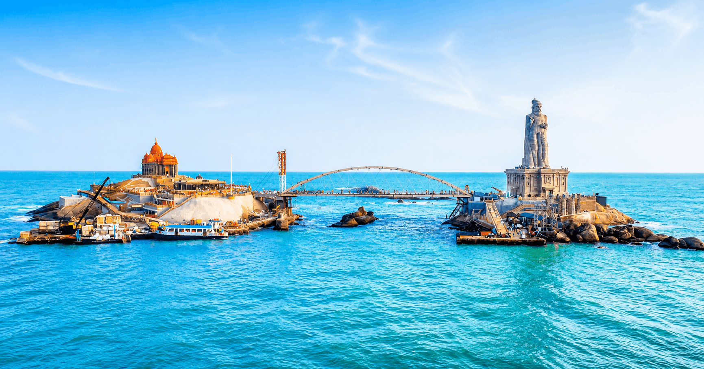
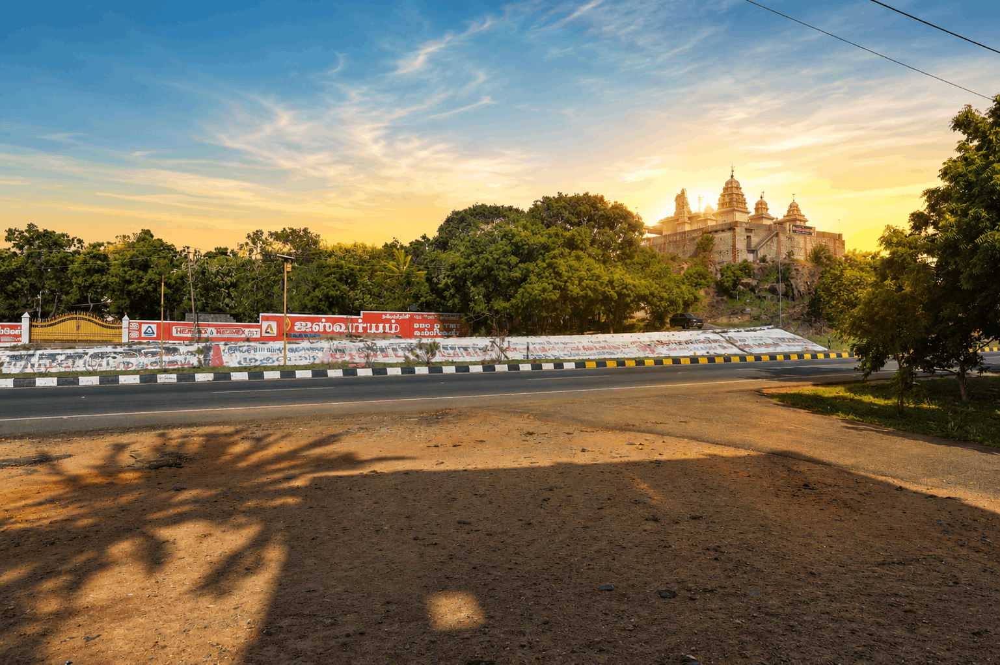
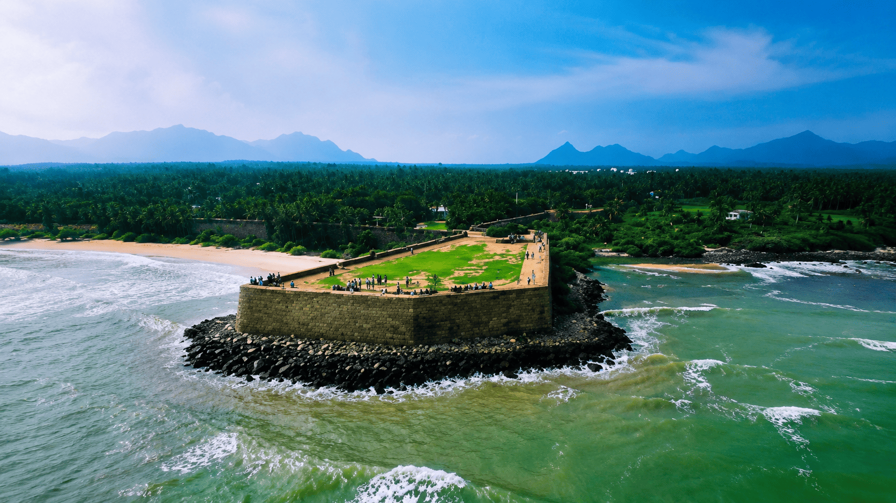

KANYAKUMARI TRAVEL GUIDE
Updated: August 2026
Kanyakumari is one of the most beautiful tourist destinations in Tamil Nadu. Located at the southern tip of mainland India, it is famous for its spectacular sunrise and sunset views, beautiful beaches, historical monuments and spiritual landmarks.
If you are planning a trip, here are some of the best places to visit in Kanyakumari and the surrounding area.

1. Vivekananda Rock Memorial
Vivekananda Rock Memorial is one of the most famous attractions in Kanyakumari. Located on a small rocky island in the sea, the memorial is associated with Swami Vivekananda.
Visitors can reach the memorial by ferry and enjoy beautiful views of the sea and Kanyakumari coastline.
📍 Get Directions
2. Thiruvalluvar Statue
The Thiruvalluvar Statue is another iconic landmark located near Vivekananda Rock Memorial.
It is one of the most photographed landmarks in Kanyakumari and can be viewed beautifully from the mainland.
📍 Get Directions
3. Kanyakumari Beach
Kanyakumari Beach is famous for its beautiful views and unique geographical location.
Early morning and evening are especially popular times for visitors.
📍 Get Directions
4. Bhagavathy Amman Temple
Bhagavathy Amman Temple is an important spiritual landmark located close to the beach.
📍 Get Directions
5. Kanyakumari Sunset Point
Watching the sunset is one of the most memorable experiences in Kanyakumari.
📍 Get Directions
6. Gandhi Mandapam
Gandhi Mandapam is an important memorial in Kanyakumari.
📍 Get Directions
7. Our Lady of Ransom Church
Our Lady of Ransom Church is a beautiful landmark known for its architecture and peaceful surroundings. It is an interesting place for visitors who want to explore the cultural diversity of Kanyakumari.
📍 Get DirectionsTravel Tips for Visiting Kanyakumari
- Start your sightseeing early in the morning.
- Plan enough time for Vivekananda Rock Memorial.
- Carry water during sightseeing.
- Check local timings before visiting attractions.
- Choose accommodation close to major attractions.
Looking for a Comfortable Stay in Kanyakumari?
Explore our rooms and book your stay at Mars Residency for your Kanyakumari trip.